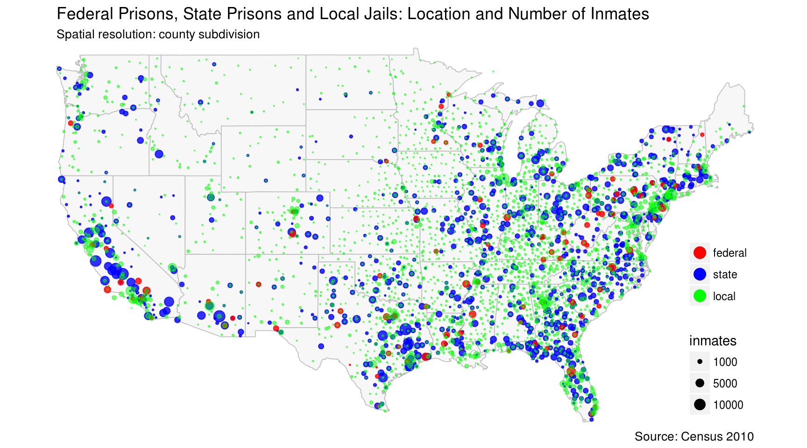

According to Census 2010, a total number of 2,263,602 persons were incarcerated in the United States. Among them, 172,020 were in federal prisons, 1,248,167 in state prisons, and 682,043 in local jails. Despite 1 in every 110 adults are behind bars, most ordenary people have no idea where are they locked up.
library(totalcensus)
library(tidyverse)
library(ggmap)
# federal and state prison location and population =============================
# search tables for fedral prison
search_tablecontents("decennial")
# PCT0200005 has the total population in federal prison
# PCT0200006 has state prison population
# read prison population data
pris_pop <- read_decennial(
year = 2010,
states = "US",
table_contents = c(
"total = PCT0200003",
"fed_pris = PCT0200005",
"state_pris = PCT0200006",
"local_jail = PCT0200007"
),
summary_level = "county subdivision",
show_progress = FALSE
) %>%
# remove county subdivisions that has no prison popualation
filter(total != 0 | fed_pris != 0 | state_pris != 0 | local_jail != 0) %>%
mutate(fed_pris = ifelse(fed_pris == 0, NA, fed_pris)) %>%
mutate(state_pris = ifelse(state_pris == 0, NA, state_pris)) %>%
mutate(local_jail = ifelse(local_jail == 0, NA, local_jail))
# summarize prison population
sum_inmates <- pris_pop %>%
summarise(total_inmates = sum(total),
total_fedpris = sum(fed_pris, na.rm = TRUE),
total_statepris = sum(state_pris, na.rm = TRUE),
total_localjail = sum(local_jail, na.rm = TRUE))
state_map <- map_data("state")
ggplot() +
#geom_path(data = map_data("world"), aes(long, lat, group = group), color = "grey", size=0.5) +
geom_polygon(data = state_map, aes(long, lat, group = group),
fill = "grey97", color = "grey", size=0.3) +
geom_point(data = pris_pop,
aes(lon, lat, size = state_pris, color = "blue"),
alpha = 0.8) +
geom_point(data = pris_pop,
aes(lon, lat, size = fed_pris, color = "red"),
alpha = 0.8) +
geom_point(data = pris_pop,
aes(lon, lat, size = local_jail, color = "green"),
alpha = 0.5) +
scale_x_continuous(limits = c(-124.69, -67), expand = c(0, 0)) +
scale_y_continuous(limits = c(25.12, 49.39), expand = c(0, 0)) +
scale_size_area(max_size = 4, breaks = c(1000, 5000, 10000, 20000)) +
scale_color_identity(guide = "legend",
breaks = c("red", "blue", "green"),
labels = c("federal", "state", "local")) +
guides(color = guide_legend(override.aes = list(alpha = 1, size = 4))) +
labs(title = "Federal Prisons, State Prisons and Local Jails: Location and Number of Inmates ",
subtitle = "Spatial resolution: county subdivision",
caption = "Source: Census 2010",
color = NULL, size = "inmates") +
coord_map() +
theme(
panel.background = element_blank(),
axis.line = element_blank(),
axis.title = element_blank(),
axis.text = element_blank(),
axis.ticks = element_blank(),
legend.position = c(1, 0),
legend.justification = c(1, 0)
)